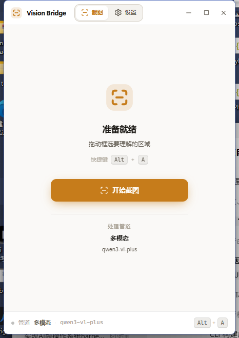
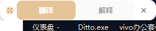
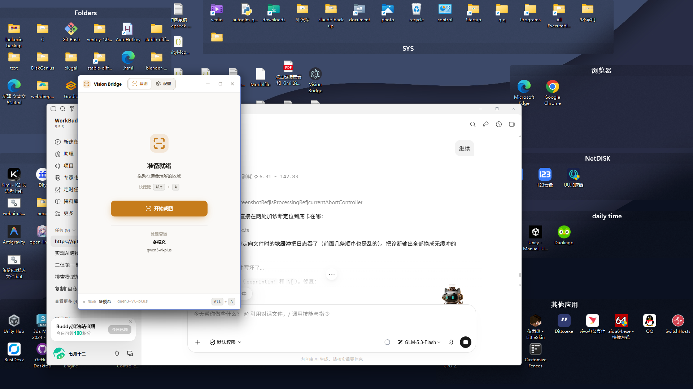

移植实验 · 结果报告
把同一个应用原样移植到 Tauri，前端源码一行未改（20 个 UI 组件全部复用）， 只把「Electron 主进程负责的事」按 Tauri 的方式重写。目标是验证体积能否小十倍。
| 指标 | Electron | Tauri | 结果 |
|---|---|---|---|
| 安装包（setup） | 72.6 MB | 1.4 MB | 小 51.1× |
| 免安装单文件 | 72.4 MB | 3.2 MB | 小 22.3× |
| 安装后磁盘占用 | 263.4 MB | 3.6 MB | 小 72.3× |
| 程序代码体积 | 22.6 MB app.asar | 3.2 MB 整个 exe | 小 7.0× |
注：Electron 的 app.asar 里含 selection-hook 的预编译的原生模块，所以这个数字偏大；
Tauri 侧 3.2 MB 是「Rust 代码 + 全部前端资源 + 图标」的完整应用，不含任何运行时。
每个应用自带一份 Chromium + Node.js。这 260 MB 里，应用自己的代码只占 22 MB， 其余全是运行时——而这部分每个 Electron 应用都要重复装一遍。
用 Windows 自带的 WebView2（本机已存在，Edge 的一部分）。打包产物只有一个 exe， 没有运行时、没有 node_modules、没有解压出来的原生模块。
依赖系统 WebView2（Win10 1803+ 自带，更老的系统需要引导安装）； Rust 编译比 Node 打包慢；原生能力要自己写 FFI 而不是调 npm 包。
体积不是靠砍功能换来的。下面这些都实际可用：
Alt+A / Alt+T下面是真实运行中的 Tauri 版窗口（不是 Electron 版的截图）：

把两张截图的颜色分布对比，主色占比几乎逐项吻合——同一个前端、同一套设计令牌， 在 WebView2 里渲染出来的结果与 Chromium 一致：
| 颜色 | Tauri | Electron |
|---|---|---|
纸 #FAF9F7 | 71.3% | 75.8% |
白 #FFFFFF | 11.2% | 11.6% |
荧光笔 #C67C1B | 3.7% | 3.9% |
纸深 #F4F2EE | 0.6% | 0.6% |
你在实际使用中发现的问题，逐一用可量化的方式定位并修掉了。 这个环境无法把截图给模型看，所以每一条都用数字验证： 注入脚本把布局与渲染事实报回主进程，再用整屏亮度、颜色分布做客观比对。
| 你看到的现象 | 根因 | 验证 |
|---|---|---|
| 划词后弹出一个怪异的框 「截图 / 设置」被挤成两行 |
App 从 URL 读窗口类型，而 Tauri 的资源解析会丢掉 ?window= 查询串，
于是 280×52 的工具条窗口回落到主界面分支，整个 UI 被塞了进去 |
工具条上报 txt:翻译 解释 |
| Alt+A 直接全屏、看不到截图 | 遮罩的压暗是画在透明窗口上的；我此前为排查空白页给 body 加的不透明底色，
把它变成了满屏纸色（实测整屏 89.9% 是同一个颜色） |
修复后 3028 种颜色，桌面透过压暗层可见 |
| 结果卡片从来不出现 | 同步命令在主线程里创建窗口 → 死锁：build() 要等事件循环，
而事件循环阻塞在这条命令里。窗口从未被创建，且没有任何报错 |
命令改 async，卡片出现在选区旁 |
| 划词有时弹出错误的内容 | 模拟 Ctrl+C 后不校验剪贴板是否变化，会把之前复制的内容当成选区 | 先清空再复制，空结果 = 无选中 |
capabilities 文件时，会拒绝所有插件命令（plugin:event|listen not allowed by ACL），
而报错只出现在 unhandled rejection 里。这意味着全部五个事件通道
（截图路由、划词推送、结果显示、取消请求）此前都是断的 —— 这正是「两个版本里 Tauri 版更不稳定」的主要原因。
已补上 src-tauri/capabilities/default.json。


所有界面代码都通过 window.ipcRenderer.* 调用原生层。与其改 20 个组件，
不如在 Tauri 之上把这个对象原样重建出来——于是前端源码零改动：
// src/lib/ipc.ts —— Tauri 版的 preload 替身 invoke('get_settings') // 设置读写 invoke('capture_screen') // GDI 截屏 invoke('open_mask', {...}) // 遮罩窗口 listen('selection-text', ...) // 划词事件
Electron 里所有模型调用都必须在主进程发（渲染进程开不了原生 socket）。
Tauri 的渲染进程就是普通 WebView，fetch 直连厂商即可。
这一步让 Rust 侧完全不需要 reqwest / tokio / TLS 栈——
而这几样东西恰恰是 Rust 二进制体积的大头。
windows crate
只需要 GDI 截屏、剪贴板、SendInput、几个系统度量。
windows crate 会生成几万个条目并显著撑大 release 产物，
所以 winmod.rs 里按需声明了几十个函数。
需要识别的只是「按下 → 移动 → 抬起」这一个手势，GetAsyncKeyState 轮询即可判定；
而 WH_MOUSE_LL 钩子一旦回调超时会被 Windows 静默摘掉。
另外合成输入能更新 GetAsyncKeyState，所以这条路径在自动化测试里也是可验证的。
Rust 侧直接读写 %APPDATA%\vision-bridge\settings.json，
所以 Tauri 版一启动就带着你现有的配置（厂商、API Key、主题、工具条按钮），不用重填。
# 前端（与 Electron 版同一份源码） npm run build:web # Rust + 打包（必须走 Tauri CLI：裸 cargo build 会被判成 dev 模式从而加载 devUrl） python tools/build-tauri.py --bundle # 体积对比报告 python tools/measure-size.py
cargo build --release 产出的 exe 启动后会停在 WebView2 错误页：
tauri-build 无法区分它与开发构建，于是让窗口去加载 devUrl（localhost:1420），
没有服务在监听，导航失败。CLI 会设置 TAURI_ENV_* 把它切到生产模式（内嵌资源）。
这个坑花了最久才定位到，现象是窗口标题正常但内容是浏览器错误页。